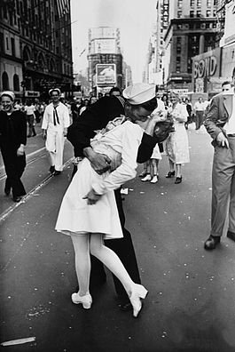

V-J Day in Times Square
Alfred Eisenstaedt · 14 August 1945 · Photograph
In copyright. Look and learn: shown for study, not for download.
Eisenstaedt was forty-six and on the staff of Life when he made this with a Leica IIIa in Times Square on 14 August 1945; researchers have put the time at about 5:51 in the afternoon. He took four frames in a few seconds and did not get the names of the couple. Life ran it a week later in a twelve-page section on the victory celebrations. A Navy photographer, Victor Jorgensen, caught the same kiss from another angle, and his picture ran in The New York Times the next day.